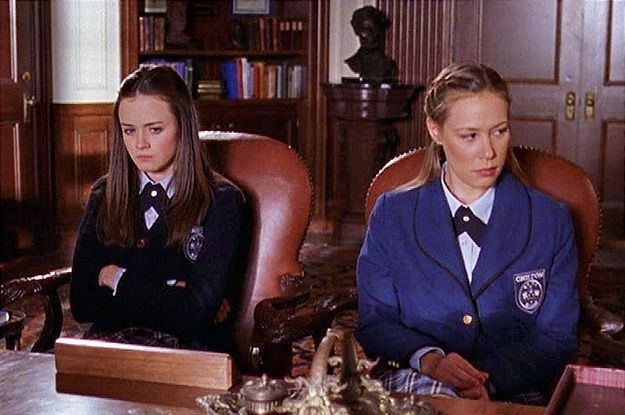
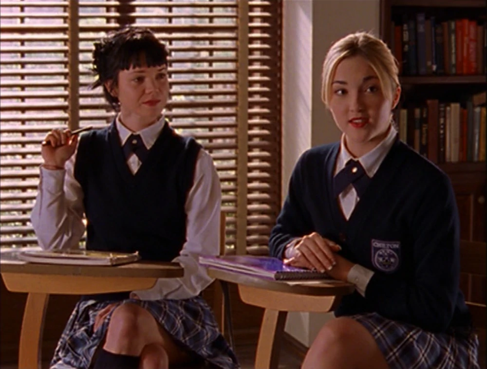

Rory Gilmore

Lorelai Leigh "Rory" Gilmore is a fictional character from the WB/CW television series Gilmore Girls portrayed by Alexis Bledel.
She first appeared in the pilot episode of the series on October 5, 2000 and appeared in every episode until the series finale on May 15, 2007.
Character
- Lorelai "Rory" Leigh Gilmore is the only daughter of Lorelai Gilmore and the first born daughter of Christopher Hayden.
- She was born on October 8th, 1984 at 4:03 in the morning.
- Though born in Hartford, Connecticut, Rory was raised in Stars Hollow where her mother originally worked as a maid at the Independence Inn.
- Rory had limited contact with her grandparents, Richard and Emily Gilmore, when she was growing up, usually only seeing them during the holidays.
Rory's story is mainly told through her studiousness, harnessed by her mother from an early age and by no means forced or rejected by Rory, but rather embraced as almost a sole identifying characteristic. She spends her first year of high school attending the local Stars Hollow High School with Lane, but is accepted to the prestigious Chilton which can improve her odds in getting accepted Harvard, a lifelong dream of Rory's. Shortly after starting her sophomore year, Rory starts attending Chilton leaving her best friend Lane Kim behind. During her last days at Stars Hollow High School, Rory meets the new kid in town and her first boyfriend, Dean Forester.
Rory's friends
Lane Kim
Rory and Lane meet as young children, and quickly become best friends— remaining so all throughout their teenage years and beyond, even when their lives divulge into seperate paths as Rory attends Yale and Lane decides to stay in Stars Hollow and follow her calling to be a drummer. Rory often helped Lane sneak junk food and “contraband” music from Lane’s oppressively strict mother, and the pair continue to swap troubles as they grow older. The distance Yale puts between them occasionally rears its head, but usually they’re always there for one another, in both good times and bad.
Paris Geller

Rory and Paris share a complicated friendship, simply because of Paris’s difficult personality and her constant need to be the best at everything. This causes issues for Rory, who is fairly non-competitive and instead chooses to focus on her own goals— a concept lost on Paris, who makes much of Rory’s time at Chilton difficult. The pair eventually bond over their shared lack of interest in parties and other typical “high school” activies, like dating around or drinking. This leads to a fairly solid friendship, which withstands Paris’s rejection from Harvard— which Rory is accepted to— and results in both girls attending Yale together and sharing a dorm. They end up living together for most of their time there, except for the short break in which Rory dropped out of Yale, though they reunite when Rory returns and she, Paris, and Doyle (Paris’s then-boyfriend) share a dingy apartment off-campus. Paris and Rory’s friendship is once again tested when Paris is voted out of her position as editor of the Yale Daily News; a spot which is filled by Rory, who is chosen by popular demand. This results in Paris kicking Rory out of the apartment and forcing her to live with Logan, though the pair reunites when they both end up broken-hearted at the same time, and very briefly resolve to live together again before both get back together with their boyfriends in the same night. This marks the end of their fight and thus the reestablishment of their friendship.
Madeline & Louise

Madeleine and Louise are friends of Paris' at Chilton, or really more so like a posse of sorts. They are not very ambitious students and show more interest in boys, parties and fashion. While Rory's relationship with them is usually dependent on the status between Rory and Paris, they eventually all become friends. Madeline is usually kind to Rory and most times oblivious when the Trifecta are at war with Rory, while Louise is incredibly smart and very astute to Paris' behavior. Rory later meets them again in Florida at the spring parties and they once show up in Yale - for a party as well, of course.